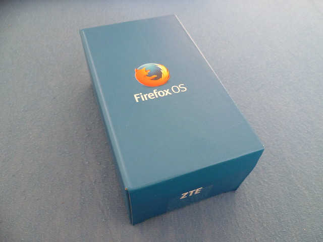
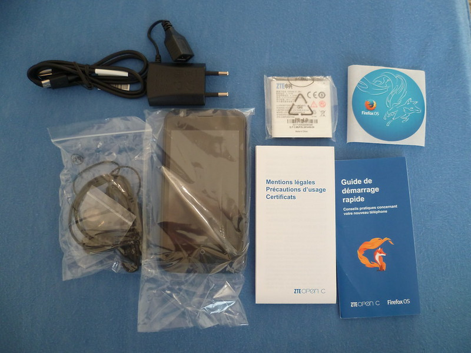
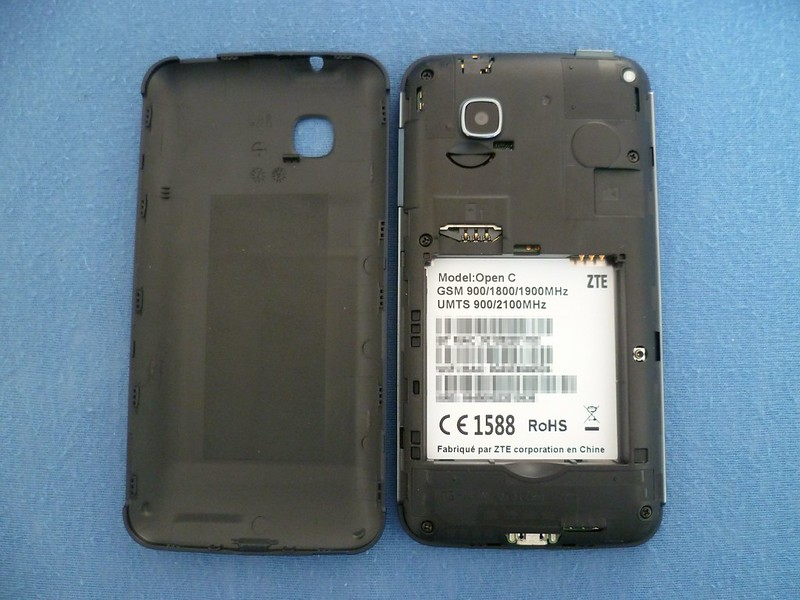
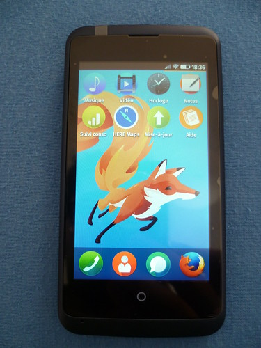

22 septembre 2014
Test du ZTE Open C
Suite des tests des appareils Firefox OS, aujourd'hui l'Open C de ZTE !
Si vous avez suivi un peu l'actualité de Firefox OS, vous avez vu que les premiers smartphones sont sortis en France et sont distribués par Leclerc notamment.
Le modèle disponible en magasin est donc l'Open C, un smartphone d'entrée de gamme, proposé à un prix de 80 € avec offre de remboursement de 10 € par ZTE.
C'est le premier téléphone Firefox OS « grand public » que j'ai sous la main et je peux dire qu'il est plutôt pas mal.
Voici ses caractéristiques :
- Processeur : Qualcomm MSM8210 Snapdragon, 1.2GHZ Dual core ;
- Écran : 4” (800×480 pixels) ;
- Appareil photo : arrière : 2MP avec flash mais sans auto-focus ;
- Fréquences : GSM 900/1800/1900MHz UMTS 900/2100MHz ;
- Capacité de stockage : 4 Go + lecteur MicroSD ;
- RAM : 512 Mo ;
- Connectivité : A-GPS ;
- Batterie : 1400 mAh ;
- WiFi : 802.11 b/g/n ;
- Bluetooth 4.0 ;
- Ports : Micro USB, casque (Jack).

Tout d'abord, le packaging. La boîte est simple avec un design épuré et efficace. On retrouve les logos de ZTE et Firefox OS ainsi que le renard de feu sur l'arrière de la boite.
Le contenu est toujours classique, on retrouve les accessoires : Casque jack, câble microUSB et chargeur USB. Je trouve que ce dernier possède une forme bizarre, j'ai un peu peur pour la solidité de l'embout femelle USB. Pourquoi ne pas avoir fait un chargeur avec l'embout directement intégré ? On retrouve aussi les mentions légales, précautions d'usage, un guide de démarrage rapide et toujours le sticker Firefox OS ;)

Je ne vais pas comparer ce modèle au Flame, car ce n'est pas vraiment le même public visé ainsi que la même gamme. L'appareil est plutôt léger (127 g) et facile à prendre en main, on retrouve toujours les boutons d'allumage (en haut), de réglages volume (à droite) ainsi que le bouton rond "Home". La prise jack se situe en haut et la prise microUSB en bas de l'appareil. Côté appareil photo ce n'est pas fameux, mais suffisant pour prendre en photo des paysages, on regrettera l'absence du flash. Au niveau système, nous avons donc Firefox OS en version 1.3 avec plusieurs applications pré-chargées : Twitter et Facebook pour les réseaux sociaux, HERE Maps de Nokia pour les cartes et les trajets, « Notes » de Mozilla pour la prise de notes, « Aide » de Mozilla qui regroupe des informations utiles et « Mise-à-jour » de ZTE pour obtenir les nouvelles versions de Firefox OS ainsi que les correctifs à venir. ZTE va assurer les mises à jour sur cet appareil et une version 2.0 pourrait bien sortir d'ici la fin de l'année, apportant un tout nouveau look pour le bureau à savoir un défilement vertical, de plus grosses icônes et un nouveau design pour les applications systèmes. Après plusieurs tests, il s'avère que l'appareil tiens environ 8h allumé avec le Wi-Fi activé et sinon 2 jours avec une utilisation normale sans Wi-Fi/3G constamment activées. Le téléphone est aussi disponible en vente sur pas mal de boutique en ligne et je vous le recommande autant pour un premier smartphone, que pour développer dessus, voir même migrer sur Firefox OS. Toutes mes photos du ZTE Open C dans ma galerie Flickr.
Commentaires 14